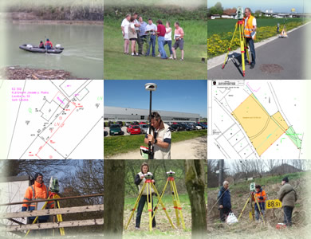

Leistungen
Von der Katastervermessung über technische Vermessung und Hydrografie bis hin zu Vertretung und Consulting.

Seit Gründung der Kanzlei sind wir neben der Katastervermessung auch mit Bauvermessungen und Bestandserfassungen vertraut. Erstellen von Teilungsplänen und -entwürfen, Lage-/Höhenpläne, Achsabsteckungen, Kubatur- und Massenabrechnungen, Profile, Bauwerksüberwachung inklusive Integrity Monitoring, Setzungs- und Deformationsmessungen, Bereitstellung von Projektunterlagen, Aufbereiten von Luftbildern usw. gehören zu unseren Standardaufgaben.
In den vergangenen Jahren konnten wir unsere Tätigkeit um Beratungen bei sämtlichen mit dem Verkehr und der Veränderung von Liegenschaften auftretenden Fragestellungen und Abläufen erweitern. Hierbei schätzen unsere Kunden vor allem die umfassende Betreuung und unsere Vertretungstätigkeit der Kundeninteressen gegenüber Behörden und Geschäftspartnern.
Übersicht
Unsere fünf Tätigkeitsbereiche
Katastervermessung
Rechtlich relevante Vermessungen rund um Eigentum an Grund und Boden – Grenzen, Teilungen, Gutachten.
Technische Vermessung
Planungsgrundlagen, Bauvermessung, 3D-Laserscanning und Überwachungsmessungen.
Hydrografie
Vermessung von Fluss- und Meeresboden mittels Echolot – europaweit, zertifiziert für Binnenwasserstraßen.
Vertretung
Ein Ansprechpartner für Ihr gesamtes Projekt – von der Umwidmung bis zum fertigen Bauobjekt.
Consulting
Beratung bei der Einführung neuer Technologien und der Modernisierung bestehender Abläufe – international.
Wir beraten Sie gerne
Kontaktieren Sie uns für ein unverbindliches Erstgespräch zu Ihrem Vorhaben.